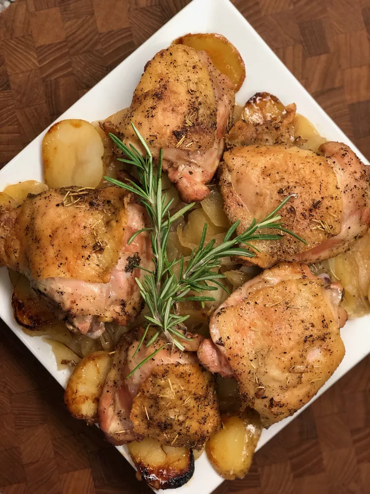

Rosemary-Roasted Chicken with Apples and Potatoes

Description
With minimal preparation, this everything bagel seasoned chicken casserole
with orzo can be on the table in just over an hour. If you love artichoke
spinach dip, then you may want to give this casserole a try.
Ingredients
- cooking spray
- 2 tablespoons butter
- 1 large onion, sliced
- salt, plus more to taste
- 4 teaspoons white sugar
- 5 medium apples - peeled, cored, and cut into 1/4-inch slices
- 1 pound Yukon Gold potatoes, cut into 1/4-inch slices
- 2 tablespoons olive oil
- 6 bone-in, skin on chicken thighs
- 2 tablespoons chopped fresh rosemary
- ground black pepper
Directions
-
Preheat the oven to 400 degrees F (200 degrees C). Spray the top and
bottom parts of a broiler pan with cooking spray.
-
Add orzo into the casserole dish. Pour in chicken broth. Add spinach
artichoke dip, minced garlic, and crushed red pepper flakes; stir to
combine.
-
Season chicken with salt and Italian seasoning. Add chicken to the
casserole dish; cover with aluminum foil.
-
Bake in the preheated oven until orzo is tender with a bite, and chicken
is no longer pink at the center, about 45 minutes. An instant-read
thermometer inserted near the center of chicken should read at least 165
degrees F (74 degrees C).
-
Remove casserole from the oven, uncover, and sprinkle evenly with panko,
mozzarella cheese, and bagel seasoning.
-
Set an oven rack about 6 inches from the heat source and preheat the
oven's broiler. Broil casserole until topping is golden, about 5
minutes. Serve immediately.